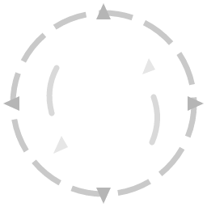

Corruption
Gamble an item to seal in one unique, named effect that can never be rolled naturally - at the price of locking the item forever.
The bargain
Corrupting an item (at the Luminary Cube) is a one-way transformation. It grants exactly one unique effect as a capstone, then permanently locks the item: it can never be re-rolled, upgraded, grafted, or corrupted again… unless you later Cleanse it. Corruption is available on Legendary and Relic gear and costs a heart plus 5 legendary scrap at the cube.
What you can get
Corruption draws from a pool of roughly sixty named uniques. They come in three flavours, all corruption-only:
| Flavour | Examples |
|---|---|
| Oversized stat / skill uniques | Polymath (+All-Skills), Master Chef, Marauder, Architect, Diplomat… |
| The three elemental "uber" auras | Radiance (fire), Entropy (cold), Superconductor (lightning) - see Auras |
| Relic powers | Cleave (Reaver's Edge), life-steal, thorns, and nine more on-hit / defensive powers |
Potency scales with the base tier
A corruption unique is scaled by the item's tier, so corrupting a Relic yields a stronger version than corrupting a White.
So the ideal corruption target is a Relic-tier item that already has strong affixes - corruption adds the unique on top of everything it already carries.
Reading a corrupted item
Corrupted items wear an animated red pulse outline and list their unique effect last on the card (after affixes, before special modifiers). The status line reads Corrupted.
